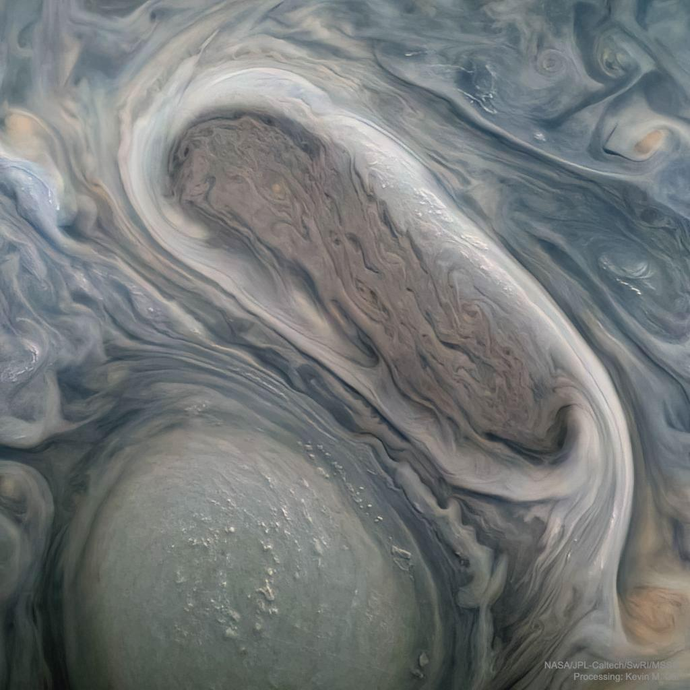
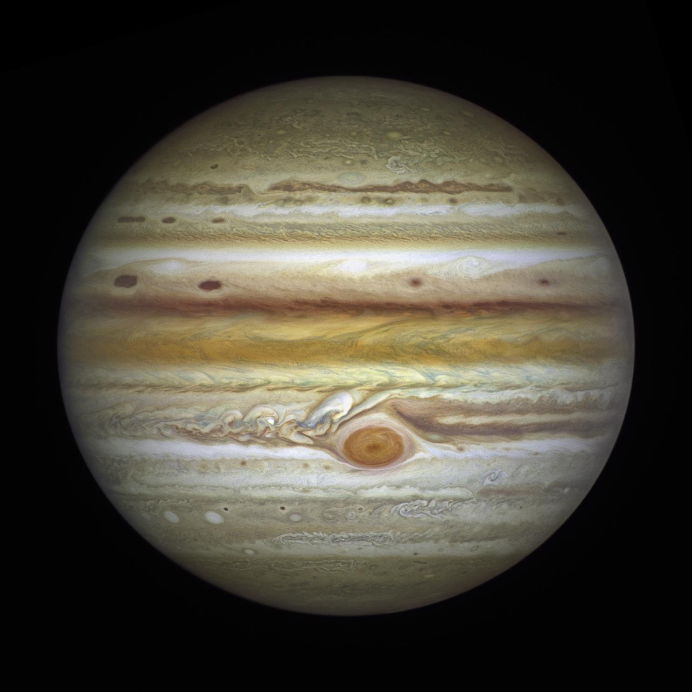
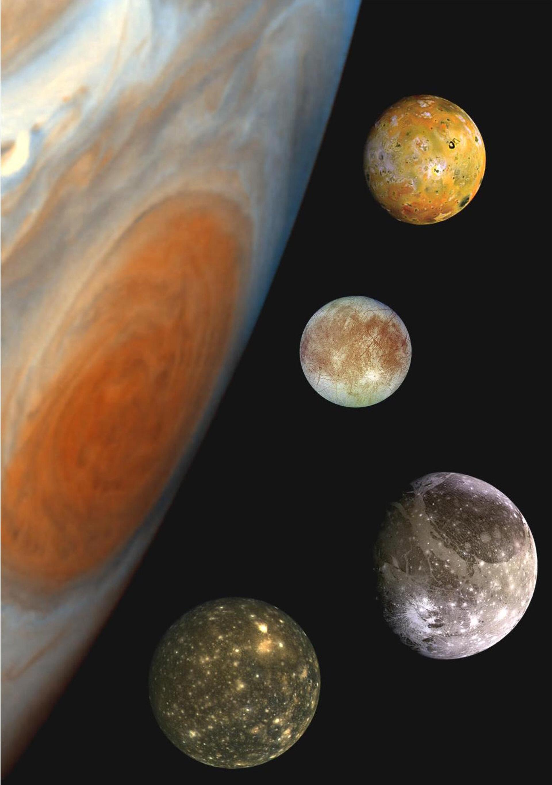
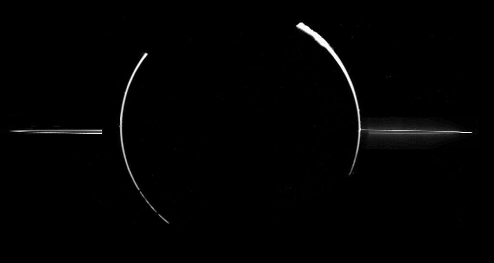
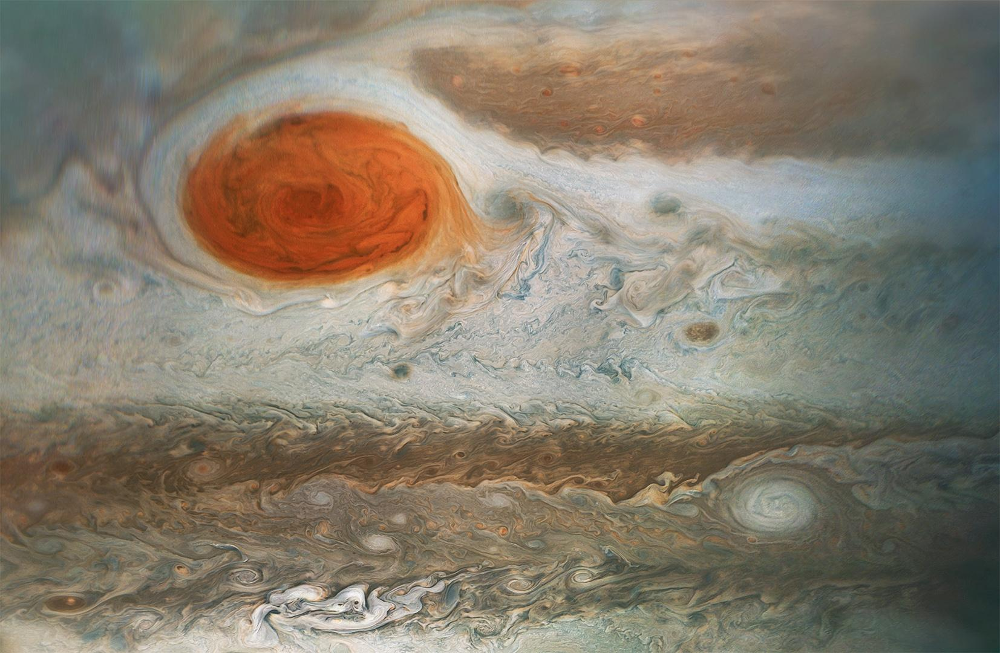
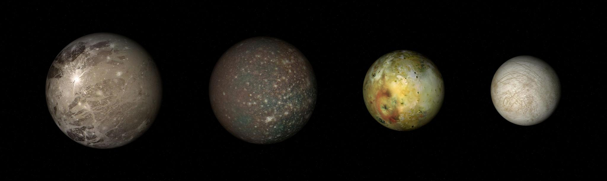
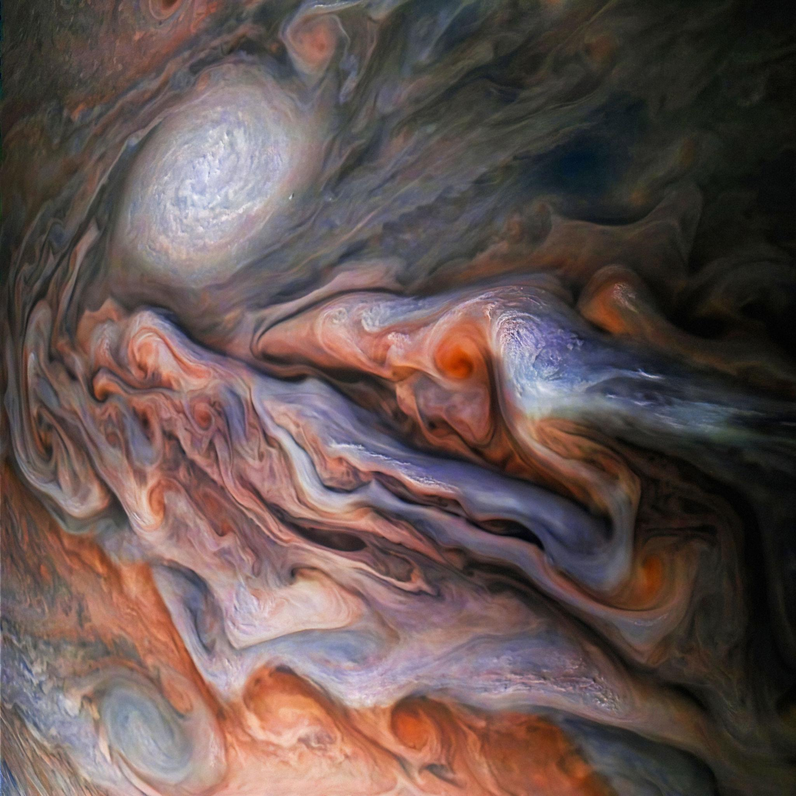
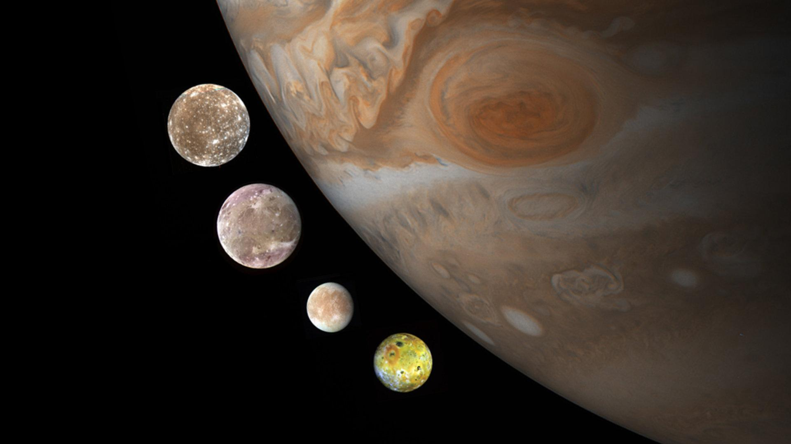

Io
Highly volcanic and one of the most active bodies in the solar system.
Jupiter is the fifth planet from the Sun and the largest planet in the solar system.
It is a massive gas giant, meaning it does not have a solid surface like Earth. Instead, it is made mostly of hydrogen and helium, similar to the Sun.
Because of its enormous size, Jupiter has a very strong gravitational pull and plays an important role in shaping the solar system. It acts like a cosmic shield, helping protect inner planets by attracting comets and asteroids.
Discover More ›
Jupiter — the largest planet in the solar system.

The Great Red Spot — a storm larger than Earth.
Jupiter is famous for its powerful and colorful storms. The most well-known is the Great Red Spot, a massive storm that has been raging for hundreds of years.
This storm is larger than Earth, constantly rotating with high-speed winds, and surrounded by swirling cloud bands.
Jupiter’s atmosphere is full of turbulent storms, lightning, and fast-moving winds, making it one of the most dynamic planets in the solar system.
Jupiter’s atmosphere is made mainly of hydrogen (about 90%) and helium (about 10%).
The colorful bands seen on Jupiter are created by differences in temperature and chemical composition, as well as rapid rotation causing strong wind patterns.
As you go deeper into the planet, pressure increases dramatically, eventually turning gases into a liquid metallic hydrogen layer.

Jupiter’s colorful cloud bands and atmosphere.

Jupiter’s massive size compared to Earth.
Jupiter is enormous, with a diameter of about 143,000 km. More than 1,300 Earths could fit inside it.
Its mass is greater than all other planets combined. Despite its size, Jupiter rotates very quickly, completing one rotation in just under 10 hours, making it the fastest-spinning planet.
Jupiter has over 90 known moons, making it like a mini solar system of its own.

Highly volcanic and one of the most active bodies in the solar system.

May have an ocean beneath its icy surface.

The largest moon in the solar system.

Heavily cratered and ancient surface.
Jupiter also has a faint ring system, although it is much less visible than Saturn’s rings.
Jupiter has the strongest magnetic field of any planet in the solar system. This creates intense radiation belts around the planet, which can be dangerous for spacecraft.
It also produces strong auroras near its poles, much more powerful than those on Earth.
Jupiter’s powerful magnetic field creates strong auroras.
About 10 hours
About 12 Earth years
Fastest rotating planet
Slightly flattened due to rapid rotation
Largest planet in the solar system
Made mostly of gas
Great Red Spot storm
Over 90 moons
Faint ring system
Strongest magnetic field
Extremely fast rotation
Jupiter is essentially a mini solar system on its own, with dozens of moons and a powerful gravitational influence.
Its size and composition make it more like a failed star than a typical planet.
It plays a critical role in protecting inner planets like Earth by absorbing or deflecting space debris.
Studying Jupiter helps scientists understand how gas giants form and how planetary systems evolve.